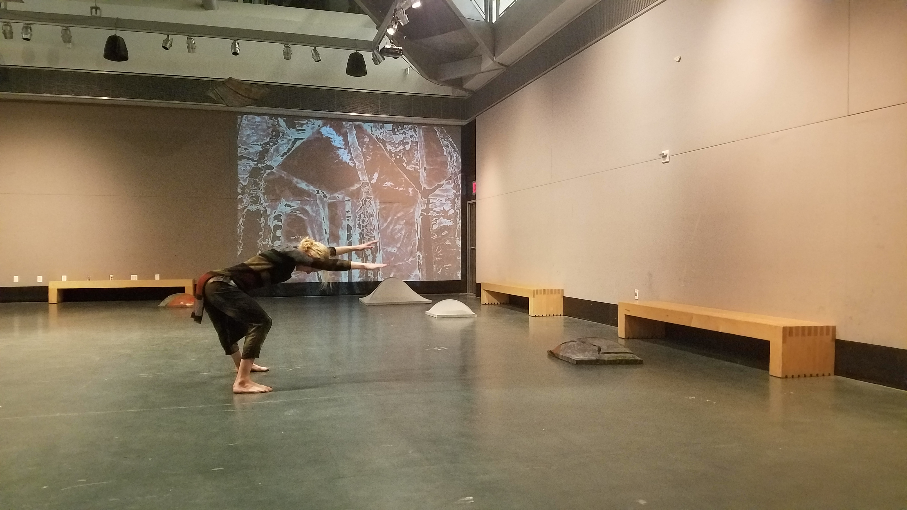

Liable to Change
"Liable to Change" Saturday February 23rd, 2pm from John Zullo on Vimeo.
Zullo/RawMovement "Liable to Change" on Vimeo.
A live dance performance from the Zullo Raw Movement Company.
For this project, I created the visuals which were projected on opposing sides on the gallery. I ran both visuals simultaneously using a TouchOSC app controller.
I filmed the dancers as well as the set pieces and created visuals based on John Zullo's these of simplicity and chaos coexisting.
